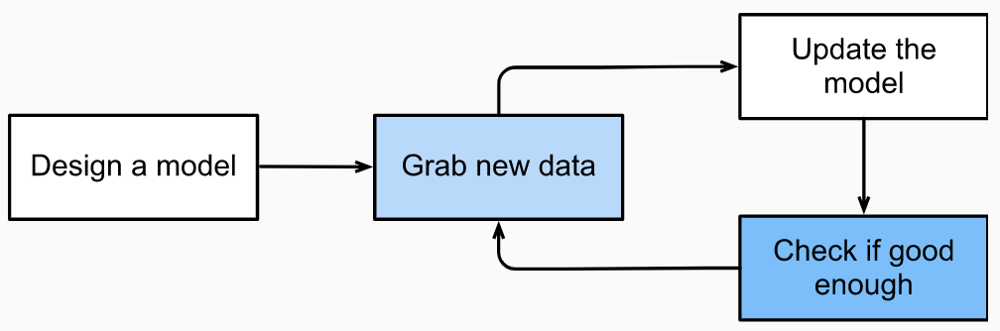

【动手学深度学习】Ch1.前言
时至今日，多数计算机程序几乎都是由软件开发人员从零编写的。为了完善业务逻辑，我们需要细致考虑应用程序所有可能 遇到的边界情况，并为这些边界情况设计合适的规则。通过不断测试直至满足需求。
在某些应用场景，我们需要程序自动调整。机器学习是一种可以从经验中学习的技术，通过采用观测数据或与环境交互的形式， 机器学习算法会积累更多的经验，其性能也会逐步提高。
使用机器学习解决问题时，需要精确定义问题，确定输入和输出性质，并选择合适模型。 模型输出由许多参数决定，使用数据集确定当下的最佳参数，这些参数通过某种性能度量 来获取完成任务的最佳性能。使用数据集来选择参数的元程序称为学习算法。学习是一个模型 的训练过程。通过这个过程，我们可以发现正确的参数集。
训练过程通常包含：
- 从随机初始化参数的模型开始，这个模型基本毫不智能。
- 获取一些数据样本。
- 调整参数，使模型在这些样本中表现更好。
- 重复第二步和第三步，直至模型表现令人满意。
机器学习这种“通过用数据集来确定程序行为”的方法可看作是“用数据编程”。

关键组件
- 可以用于学习的数据
- 用于转换数据的模型
- 用于量化模型有效性的目标函数
- 用于调整模型参数以优化目标函数的算法
数据
数据集由一个个样本组成。多数时候，样本遵循独立同分布。
样本也称数据点或数据实例。每个样本由一组称为特征或协变量的属性组成。在监督学习问题中，机器学习模型依据这些属性预测标签。
每个样本的特征具有相同数量的特征。 即：样本特征向量长度固定。特征向量的长度称为数据的维数。
一般而言，更多的数据通常可以训练出更强大的模型，减少对预先设想假设的依赖。大规模为深度学习奠定了成功基础。 某些深度学习模型可以在小数据集上工作，但其效能不比传统方法。
仅仅拥有海量的数据是不够的，还需要正确的数据。当数据不具有充分代表性，甚至包含了一些偏见时，模型很可能会失效。
模型
深度学习关注功能强大的模型，这些模型由神经网络错综复杂的交织在一起，包含层层数据转换。
目标函数
机器学习被认为是从经验中学习。学习是指自主提高模型完成某些任务的效能。
需要定义模型优劣程度的度量。这个度量被称为目标函数。因此定义目标函数并将其优化到最低点。 目标函数有时也被称作损失函数。
在回归任务中，常见的损失函数是平方损失，即预测值与实际值之差的平方。
在分类任务重，常见的损失函数是错误率，即预测与实际情况不符的样本比例。
有些目标函数易于被优化，有些目标函数由于不可微性或其他复杂性难以直接优化。此时通常会优化替代目标。
损失函数通常根据模型参数定义，并取决于数据集。在某一数据集上，通过最小化总损失来学习模型参数的最佳值。 该数据集由一些为训练而收集的样本组成，称之为训练集。训练集用于拟合模型参数，测试集用于评估拟合的模型。
优化算法
在获取了数据源及其表示、模型、适合的损失函数之后，需要一种用于搜索最佳参数以最小化损失函数的优化算法。 深度学习中多数优化算法基于梯度下降。
各种机器学习问题
监督学习
监督学习长于在给定输入特征的情况下预测标签。
-
回归：当标签取任意数值时，称之为回归问题。
-
分类：训练一个分类器，输出为预测的类别。
-
标记：学习预测不相互排斥的类别的问题称为多标签分类。
-
搜索：在信息检索领域，希望对一组项目进行排序。
-
推荐：为特定用户进行个性化推荐。
-
序列学习：摄取输入序列或预测输出序列，或两者兼而有之。输入和输出都是可变长度的序列。
无监督学习
无监督学习是一种数据中不含有”目标“的机器学习问题。
无监督学习可以回答诸如：聚类、主成分分析、因果关系、概率图模型、生成对抗网络等问题。